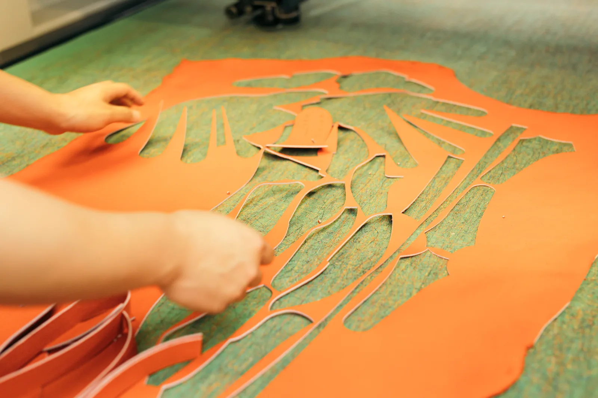
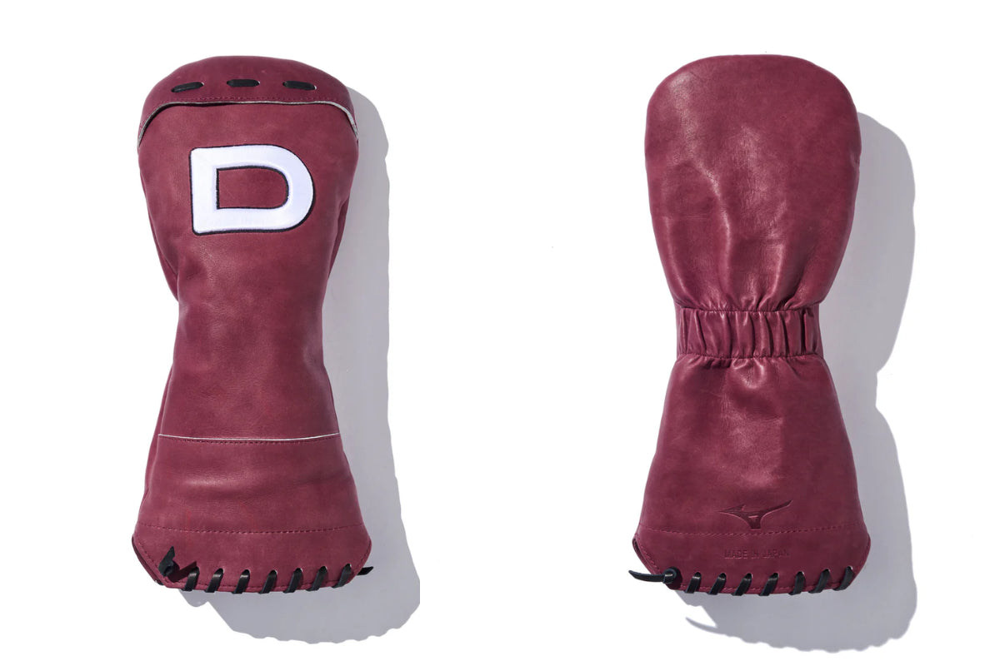
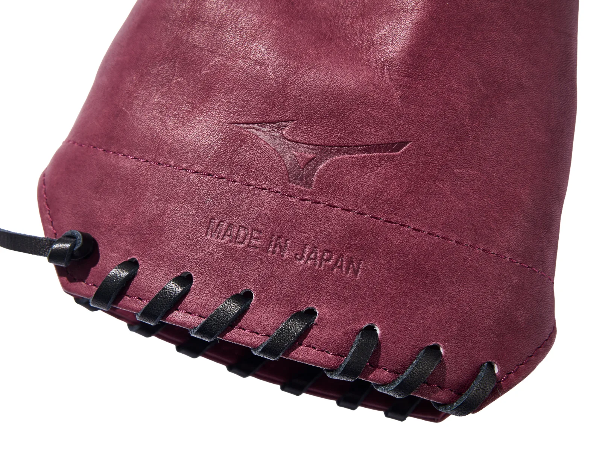
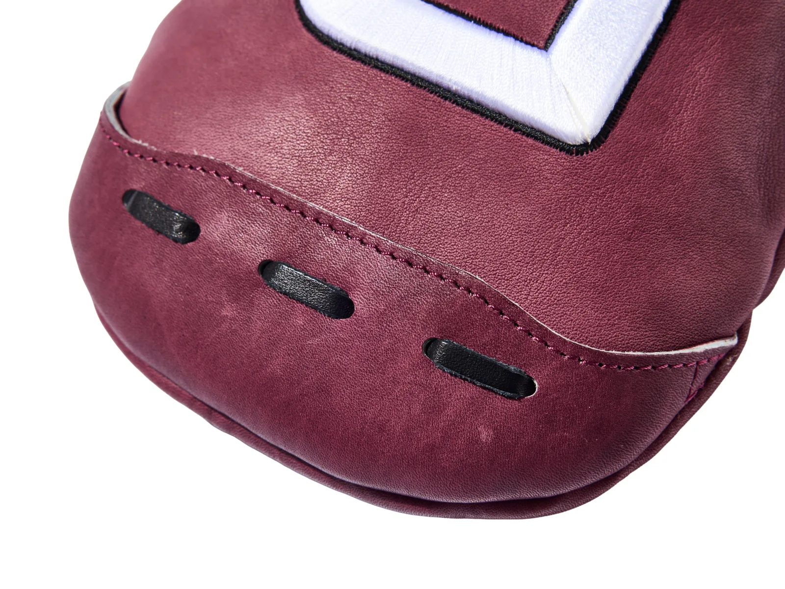
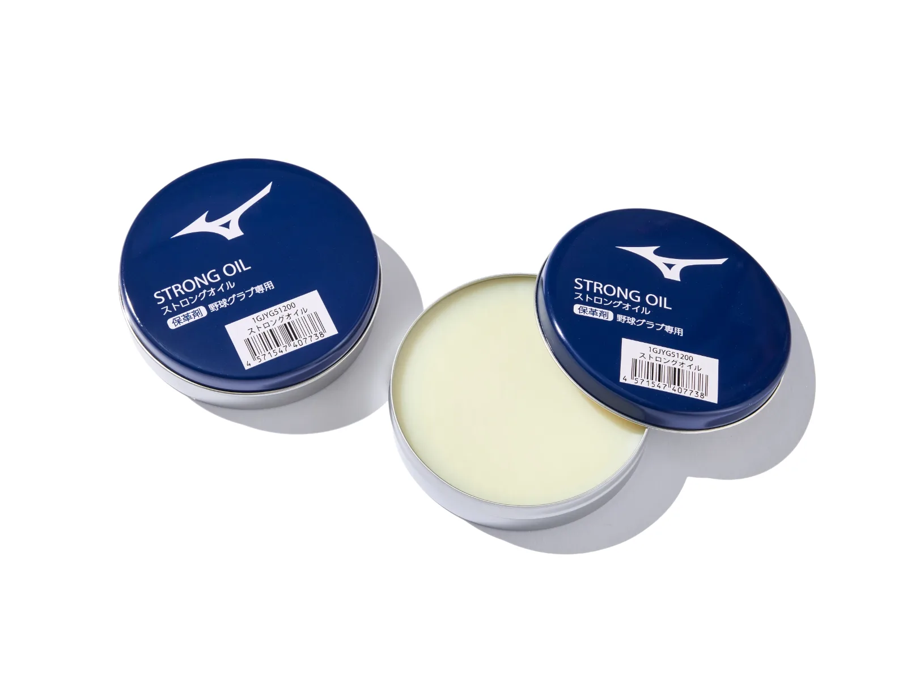
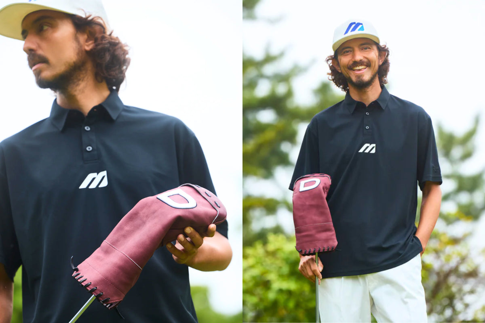

約2年にわたる開発期間を経てついにリリース
EVENがMIZUNOに別注した特別なドライバーカバーをご紹介。
THE STORY
企画会議で「端材を使って何かできないか」そんな会話から始まった商品開発。
こだわりにこだわり抜いた本作は兵庫・波賀にあるMIZUNOの職人工房で制作。

素材はプロ野球選手やメジャーリーガーのグラブを手がける、あの工房の革を使用し、
生産過程でできる端材を活かして商品化されたドライバーカバー。
DETAIL

深いバーガンディカラーにグラブを彷彿とさせるディテールを取り込み、職人によるクラフトマンシップを細部に宿す味わい深い仕上がり、カッチリとしていて非常に丈夫。

開口部には革紐をあしらった遊び心あるデザインやグラブのランバードマークを思わせる重厚な刺繍が存在を際立たせ、裏側には、熟練の職人技と確かな品質の証である「MADE IN JAPAN」の押し印入り。

タフな外面とは裏腹に、内側は柔らかなボア仕様。大切なクラブヘッドを衝撃から守りしっかり保護。上部に指を入れられる特殊構造で、ラウンド中もスムーズな着脱が可能。
CARE

カバーに加え、野球人に愛されるミズノのグラブ用クリームを、セットでお届け。 単にクラブを守る道具ではなく、クリームで手入れをしながら、自分だけの味わいに育てていくエイジングを楽しめる一品。

ラウンド後や休日に、ヘッドカバーを優しく磨き上げる贅沢な時間を。使い込むほどに深まる色艶と、ギアへの愛着をぜひお楽しみください。

ーー野球少年だったあの頃の感触とワクワク感を、もう一度キャディバッグの中に。
［MIZUNO別注］GLOVE DRIVER COVER
¥24,200(tax in)